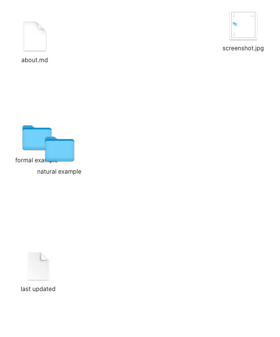

CHANGELOG.md (1.368kB)
[2026-06-18] HTML template tweaks
[2026-06-16] Added .gardenkeep skip support
- Folders containing a
.gardenkeepfile are listed in the parent gallery but not traversed — noindex.htmlis generated for them or their descendants.
[2026-06-16] Added section comments in cultivate.py
[2026-05-17] Added verbose debugging mode
- Introduced a new
-vor--verbosecommand line argument to toggle debug outputs
[2026-05-17 updates] .DS_Store Parsing Fixes & Finder Sync Enhancement
- Fixed
.DS_StoreImport Error: Corrected module import tofrom ds_store import DSStore. - Added
force_ds_store_updateFeature: Added a pre-run AppleScript hook to force macOS Finder to flush its memory cache and save icon positions to.DS_Storeimmediately.
[2026-05-17 initial Python rewrite] Ported from JavaScript (inchkev/file-gallery)
- Complete Rewrite: Ported the core static site generator from JavaScript/Node.js to Python.
- Templating Engine: Migrated HTML generation to
Jinja2. - Dependency Replacements: Replaced JavaScript dependencies with Python equivalents (PIL, pathspec, markdown, ds-store).
- Concurrency: Added
ThreadPoolExecutorfor asynchronous, parallel file parsing. - Type Hinting & Dataclasses: Refactored core logic to use Python
dataclassesand strong typing.
about.md (247B)
file-gallery-py is a static site generator
that uses files, directories, and .DS_Store
file-gallery-py is a lightweight Python rewrite
of file-gallery by inchkev
formal example/ (3 items)
last updated
2026-05-17
natural example/ (3 items)
screenshot.jpg (11.031kB)
{kind=link}
